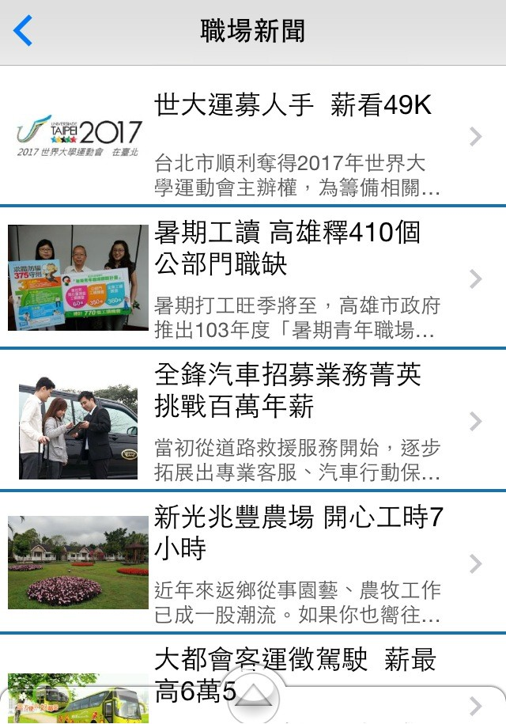
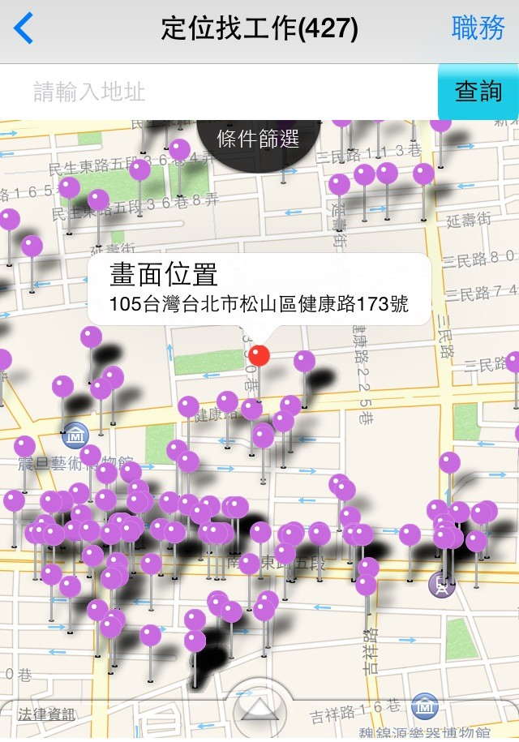
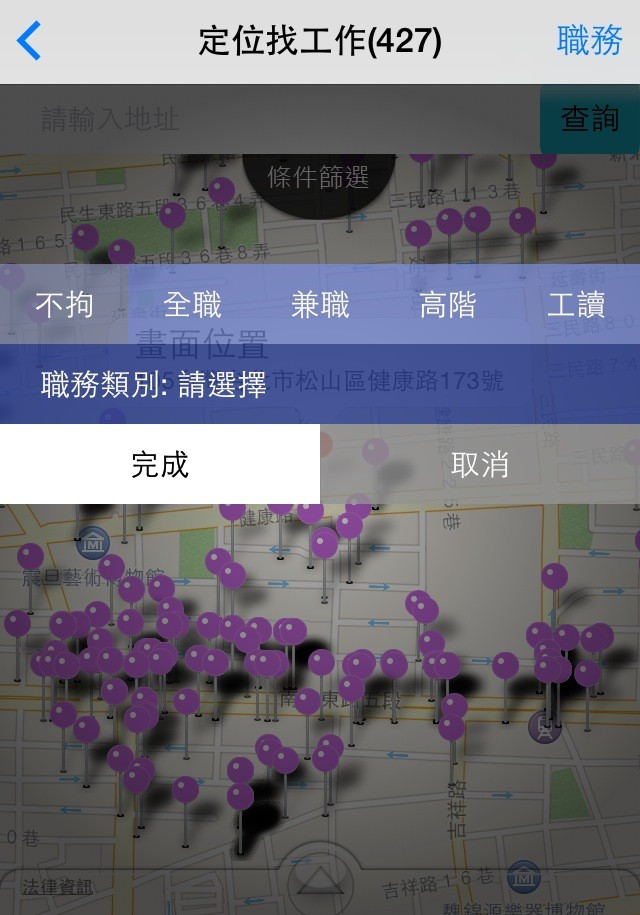
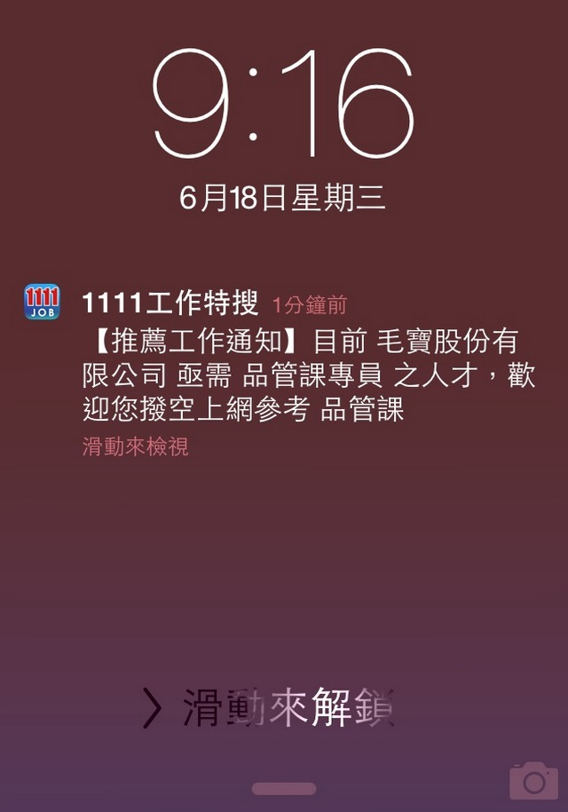
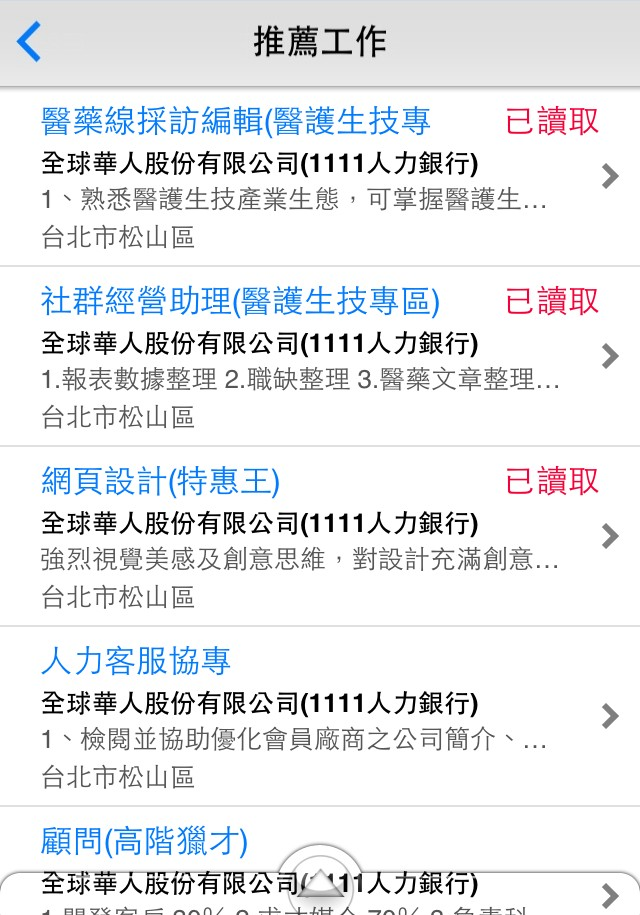
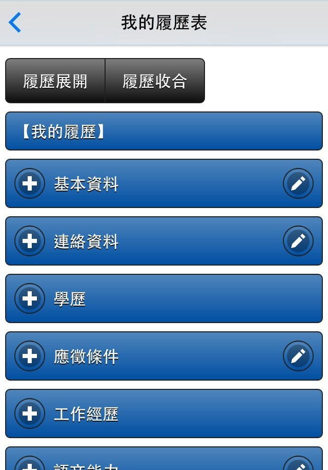
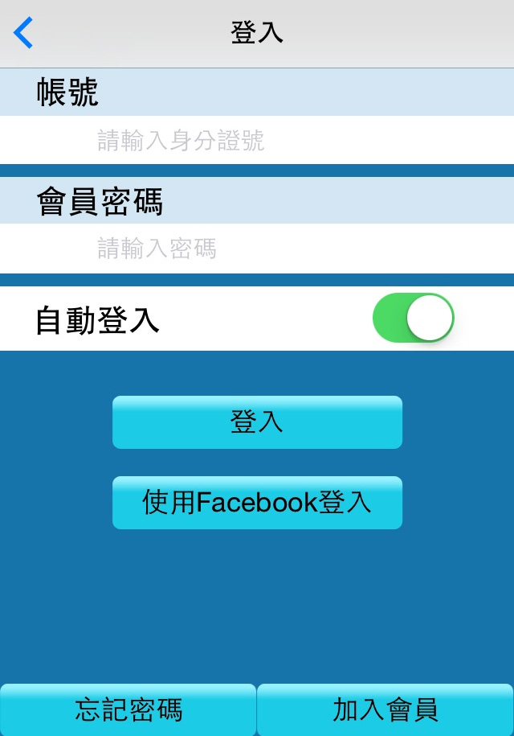
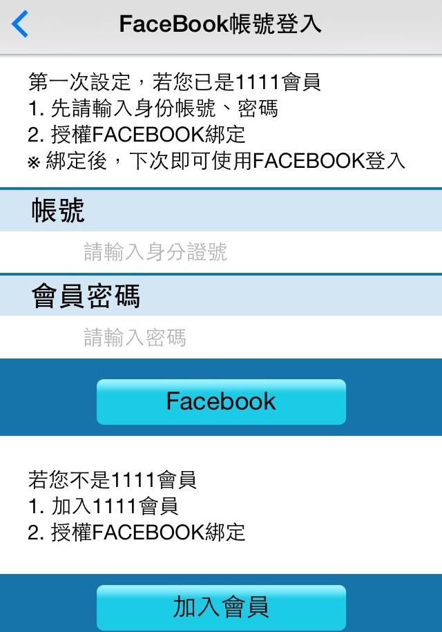

職場新聞，重要產業快訊不漏接

1111工作特搜APP新增職場新聞功能，各項產業快訊、職涯新聞，可立即推播提醒，讓您在手機上可以一指瀏覽，最新的職場快訊不漏接，隨時掌握職場大小事。
定位找工作，增加職缺篩選功能


定位找工作功能再加強，新增職缺篩選功能，可以在地圖中進階篩選全職、兼職、高階、工讀等職缺，立即篩選出適合您的職缺。
推薦工作，由1111推薦給您適合的職缺


1111工作特搜APP最新功能，依照您的應徵條件，會不定期推薦最新工作，讓您找工作有更多不同的選擇。
多重履歷，找工作不再只有單一選擇


「多重履歷表」求職功能，可以編輯各種工作類別的履歷，針對不同工作開啟不同的履歷，一人最多可以開啟六份，找工作不再只有單一選擇。
Facebook帳號快速登入，讓您找工作更迅速


工作特搜APP可以利用手機上的Facebook進行登入，第一次需要填寫您的帳號，點選Facebook後，進行帳號綁定，之後只要點選「使用Facebook登入」不用輸入帳號即可登入。